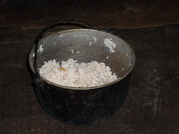

puwas 
/puas/
“take_off/uncover”
v.
for someone (egpuwas, agent, eg><ø-) to open something (e.g. a bottle of Coke, a pot of vegetables) (egpuwasan, location, eg><an-) by removing the lid
Meyi egpuwasan ka Coke, egsuwak.
When we open a coke it will overflow.
Eng. open
Online dict status: -
Usage level: B
adj.
(puwasan, -an) to a battery to be flat
Syn. lukat
Eng. flat
Online dict status: -
Usage level: B
adj.
(puwasan, -an) open
Eng. open
Online dict status: -
Usage level: B
v.
(napuwas, nA-) to rip off a toenail
Online dict status: -
Usage level: M
adj.
(napuwasan, nA><an-) uncover
Eng. lidless; without cover
Online dict status: -
Usage level: B
Updated by: RJH,QDL,QDL
Last updated: 29/Jun/2009
This page last updated: 19/May/2012
Copyright © 2009-2010, Matigsalug Language Christian Association, Inc